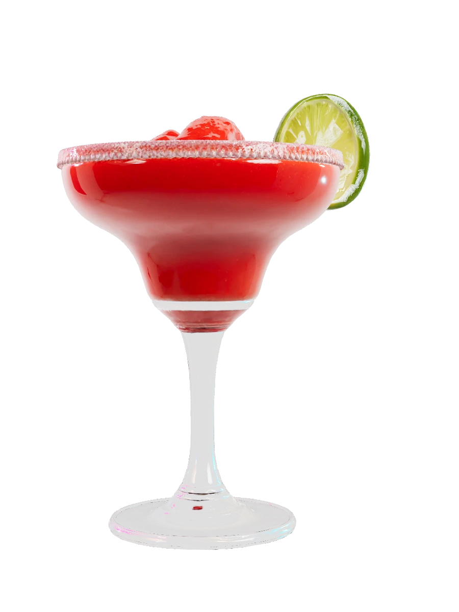
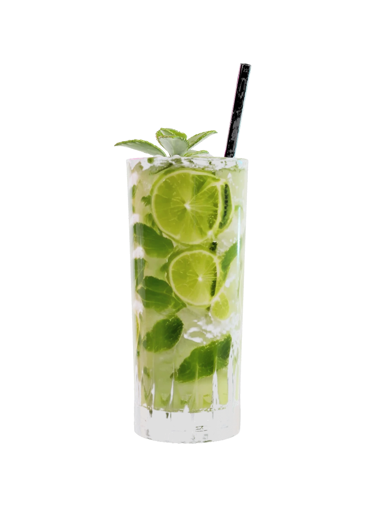

Martes a domingo · desde las 20:00
Experiencias · karaoke, DJ, Viejotecas y pista latina en Vallecas, Madrid
No hace falta elegir día ni plan: cada noche en Alegría se vive a tu manera. Cantar, bailar, celebrar o todo a la vez. Tú decides.
Cinco maneras de vivir Alegría
La noche es tuya: vívela como quieras
Aquí no hay noche de esto o noche de lo otro. Vienes, y la noche va saliendo: un rato de micro, otro de pista, un brindis por quien cumple años… Elige por dónde empezar.
Fechas especiales
Viejotecas, Halloween y fiestas temáticas
Artistas invitados, rifas y comida colombiana en las fiestas grandes. Las anunciamos primero en Instagram: síguenos para no perderte ninguna.
@laalegria_2.0 en Instagram¿Cómo te apetece vivirla hoy? Escríbenos y te guardamos sitio

